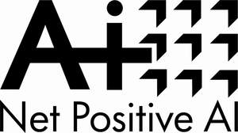

Trade Mark Journal No.2025/012 21 March 2025
UK00004169419 5 March 2025 (35,42)
Mark 1
Mark 2

- Class 35
- Business management; office functions; business advisory services; business consultancy services; business information services; business strategy consultancy and advisory services; business consulting services in the field of sustainability; business consultancy relating to technology; business consultancy relating to artificial intelligence; business consultancy services in respect of the environmental impact of artificial intelligence (AI); business consultancy in respect of reducing the energy impact of artificial intelligence (AI); business consultancy in the field of environmental protection; providing of information in the area of global sustainable business solutions; business consulting in the field of artificial intelligence (AI) relating to network energy efficiency; business consulting in the field of artificial intelligence (AI) analytics; data processing, data aggregation and business consulting in the field of artificial intelligence (AI); data aggregation and business consulting in the field of deep traffic analytics platform; data aggregation and business consulting in the field of artificial intelligence driven business analytics; providing access to platforms and portals on the internet for the purpose of artificial intelligence driven network energy efficiency; collection and processing of data; data management via computer networks; market analysis and research; strategic business analysis; business analysis services; strategic consulting relating to reducing the environmental impact of artificial intelligence (AI); data processing, data aggregation and business consulting in the field of business intelligence platform for geo-temporal network analysis; information, advisory and consultancy services in relation to all of the aforesaid. .
- Class 42
- Scientific and technological services and research relating thereto; scientific and technological services and research in the field of energy consumption; industrial analysis and industrial research services; design and development of computer hardware and software; software as a service (SaaS); software as a service [SaaS] featuring computer software platforms for artificial intelligence; platform as a service (PaaS); platforms for artificial intelligence as software as a service (SaaS); blockchain as a service (BaaS); data authentication via blockchain; computer software consultancy; consultancy in the field of artificial intelligence (AI); artificial intelligence consultancy; artificial intelligence as a service (AIaaS); technical consultancy in the field of environmental technology; technological consultancy in the fields of energy production and use; consultancy in the field of energy-saving; consultancy services in the field of climate change; professional consultancy relating to the conservation of energy; advisory services relating to the use of energy; providing technological information about environmentally-conscious and green innovations; consultancy services in relation to information technology; technology consultation in the field of artificial intelligence (AI); environmental consultancy; technology consultation and research in the field of the impact of the use of artificial intelligence on the environment; research in the field of artificial intelligence; platforms for artificial intelligence as software as a service [SaaS]; providing artificial intelligence (AI) computer programs on data networks; consultancy in the field of environmental protection; software as a service (SaaS) featuring computer software platforms for artificial intelligence; information, advisory and consultancy services in relation to all of the aforesaid.
Bernard Looney
Representative: Mishcon de Reya LLP